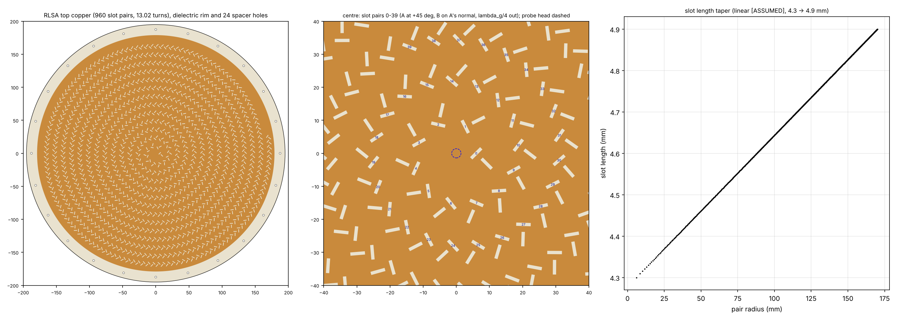
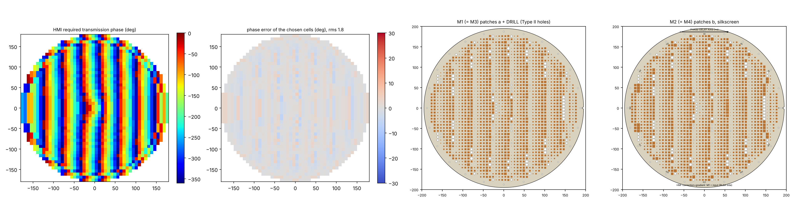
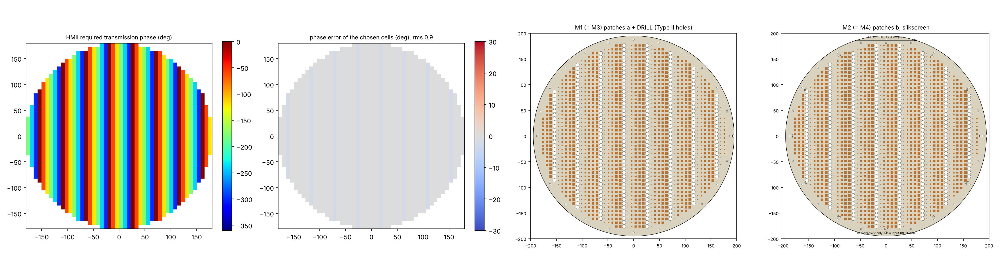
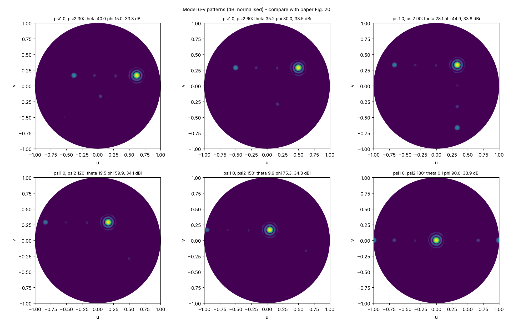
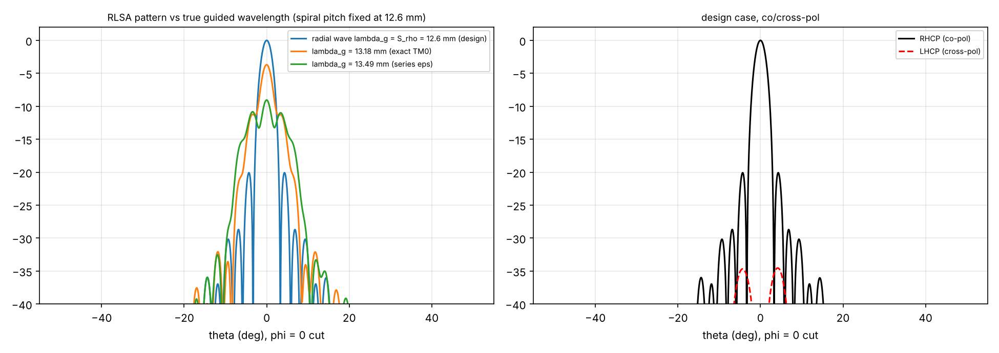
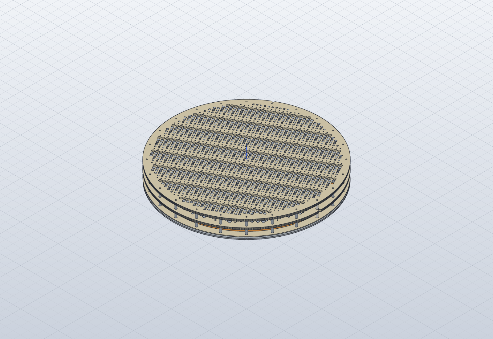

Companion to: M. U. Afzal, K. P. Esselle, M. N. Y. Koli, “A Beam-Steering Solution With Highly Transmitting Hybrid Metasurfaces and Circularly Polarized High-Gain Radial-Line Slot Array Antennas”, IEEE Trans. Antennas Propag., vol. 70, no. 1, pp. 365–377, Jan. 2022, DOI 10.1109/TAP.2021.3111522.
Everything numerical in this guide comes from
02_python/results/study_report.txt and
01_dxf/DRC_report.txt. Rerun build_nfms.py,
nfms_study.py and build_step.py after any
change.
| Term | Meaning here |
|---|---|
| NFMS, near-field meta-steering | Beam steering by rotating phase-gradient metasurfaces placed in the near field (0.25–1λ0) of a fixed antenna. Similar to Risley prisms, but thin and close to the antenna. |
| RLSA, radial-line slot array | Planar high-gain antenna: a centre-fed radial parallel-plate waveguide whose top plate carries slots that leak the outward-travelling wave. |
| Slot pair (CP) | Two orthogonal slots, each at 45° to the radial direction, with the second one λg/4 further out. The 90° excitation delay plus the orthogonality gives CP. |
| Spiral arrangement | Rotating a CP pair by φ around the feed adds phase e^{jφ}. Placing the pairs on a spiral ρ = ρ0 + λg·φ/2π cancels it, so all pairs add in phase at broadside. |
| λg, guided wavelength | Wavelength of the radial wave in the partially filled waveguide. It sets the spiral pitch S_ρ. |
| Phase-gradient (gradient phase profile) | Linear transmission phase −Δφ per cell along one axis. It tilts a normally incident beam by θ0 = asin(Δφ λ0 / (2π d)) (eq. 5). |
| Phase-delay axis | The direction of decreasing transmission phase. The beam tilts toward it. Marked by the arrow and the +x notch on each HM. |
| Correction phase | Inverse of the RLSA’s near-field phase, so that HM I sees an equi-phase aperture. |
| Normalised phase | Cell phase minus the phase of the Type II cell with the largest hole, so 0° = largest hole (paper, Sec. III-B). |
| Supercell | One period of the wrapped gradient: here 6 cells = 45 mm (0, −60, …, −300°). |
| Unit-cell (Floquet) simulation | One cell with periodic boundaries and a normally incident plane wave. It gives the S21 used to choose cells. |
| Phase method | The ray-optics prediction of the beam direction from p1, p2, ψ1, ψ2 (eqs. 1–2, ref. [27]). |
| Claim / number in the paper | Check | Result |
|---|---|---|
| Eq. (5): Δφ = 60° for θ0 = 19.5°, d = 7.5 mm | 360·d·sin θ0 / λ0 | 60.13°, OK (rounded). 60° exactly ↔︎ θ0 = 19.46° |
| Table I predicted (θp, φp), eqs. (1), (6) | nfms_study.py [2] |
All six reproduced to 0.05°, OK |
| Table I measured vs model | Aperture model with the chosen cells, rotated HM II | Model θ 40.0 / 35.2 / 28.1 / 19.5 / 9.9 / 0.1°, measured 40.6 / 35.7 / 28.2 / 20 / 10 / 0. Within 0.6°, OK |
| Eqs. (3)–(4), inverse problem | Forward-check the inverse | Wrong by a factor 2. The printed acos[(k sin
θ)²/p1² − 1] is undefined above θ ≈ 28° and gives wrong angles below.
The correct form is ψ1,2 = φ ± ½ acos[(k sin θ)²/(2p²) − 1], verified by
the forward equations. LUT_beam_to_rotation.csv uses
it. |
| Max elevation 40.6° | Eq. (1) with ψ1 = ψ2 | The hardware limit is 41.9°. 40.6° is the ψ2 = 30° case; ψ1 = ψ2 was not measured. Model at ψ1 = ψ2 = 0: 41.8°. |
| ε_eff = 1.41, λg = 12.56 mm in the radial line | Exact TM0 transverse resonance of air 3 mm + TLY-5 1.6 mm | 1.41 is the volume average (gives λg = 12.62 mm). The physical TM0 value is ε_eff = 1.294, λg = 13.18 mm (quasi-static series limit 1.234 / 13.49 mm). |
| Consequence of the λg mismatch | Slot-dipole model with S_ρ = 12.6 mm, radial wave at the TM0 λg | Broadside drops 3.7 dB (9 dB with the series value). This is a likely cause of the ~190° near-field phase ripple of Fig. 12(a), and of 34 dBi simulated against 37 dBi ideal. The correction phase in HM I partly undoes it. Confirm λg with a 2-D eigenmode run before cutting the RLSA (sec. 8). |
| 960 pairs on 13 rings | Spiral ρ0 = 6, S_ρ = 12.6, S_φ = 7.5 mm | 960 pairs give 13.02 turns, OK, and confirms the spiral reading |
| Aperture D = 345 mm | Outermost slot of the spiral | Outermost slot centre r = 173.3 mm. With L/2 the slot reaches 175.7 mm, 3.2 mm beyond 172.5, so copper ≥ Ø352. We use Ø358. |
| Ideal directivity | 4πA/λ² with the 6 dB taper | 37.2 dBi uniform, 37.0 dBi tapered. Paper simulated 34 dBi, a 3 dB shortfall (see the λg row). |
| Aperture efficiency 22 % | 30.9 dBic at 20 GHz | 23.5 % over Ø345, 21.6 % over Ø360 (the HM aperture). The paper’s 22 % uses the HM diameter. |
| Peak gain 30.9 dBic (abstract, text) vs 31.5 dBic (Table II) | Read Fig. 22 | 31.5 is the band maximum (19.4 GHz). 30.9 is at the design frequency. Not a contradiction, but the paper does not say so. |
| Gain at 40.6°: 26 dBic (text) vs 27.1 dBic (Table II) | Same reason | Band maximum vs single frequency |
| Type II cell, r 0 → 3.4 mm gives −169° → −134° | MG effective medium, exact slab | −170.3° → −133.3°, OK. The closed-form cell agrees within 1°. |
| Edge cell −13.8°: “Type II with hole diameter 2.8 mm” | Type II model | Diameter 2.8 (r = 1.4) gives −29.9°. Radius 2.8 gives −10.9°. The text very probably means r = 2.8 mm. |
| Centre cell −171°: Type I a = 4, b = 3.7 mm | Type I quasi-static ABCD | Quasi-static gives −134°. We fit one factor (C_SCALE = 1.42) on the grid capacitance so this cell lands on −171° (−0.63 dB). |
| Type I with | S21 | > −1 dB: −169° … −458°, 70° gap; HM: 35° gap |
| Patch area limited to 36 % of the cell (a, b ≤ 4.5 mm) | Library with the limit | Inconsistent with the 0.2–7.2 mm sweep. With the limit the model leaves a 125° gap. Not applied. |
| “1/3 of HM II is metal-free” | Count Type II cells | With Type II covering 0…−35°, only the 0° column of each 6-column supercell is Type II, giving 1/6 (16.9 % here). 1/3 would need the −300° column to be Type II too. |
| Total height 4.5 cm = 3λ0 | Stack 4.6 + 15 + 4.8 + gap + 4.8 | With a 15 mm HM–HM gap the stack is 44.2 mm from the plate top. A 15.8 mm gap gives exactly 45. The HM–HM gap is not stated. |
| AR < 3 dB while steering | Slot model, broadside | 0.01 dB ideal at broadside. Steered AR depends on cell polarisation purity (sec. 8). |
Model gain vs measured: the aperture model gives 33.3–34.3 dBi, against 27.1–31.5 dBic measured. It leaves out dielectric and copper loss (about 0.7 dB per the paper), RLSA radiation efficiency, feed mismatch, the cells’ oblique-incidence response, and HM–RLSA multiple reflections. So the model’s scan loss (1 dB) is smaller than the measured 4.4 dB. Use the model for direction and trends, and HFSS or CST for gain.
Frame: z = 0 on the top face of the Al ground plate, z up. HM local frame: x = phase-delay axis.
| Item | Value | Source |
|---|---|---|
| f0, λ0 | 20 GHz, 14.99 mm (paper uses 15) | Sec. IV |
| Ground plate | Al, 3 mm, z −3 … 0 | Sec. V |
| Radial waveguide | air 3.0 mm (z 0 … 3) + TLY-5 1.6 mm (z 3 … 4.6), Wh = 4.6 mm | Fig. 9(a) |
| RLSA laminate | TLY-5 εr 2.2, tan δ 0.0009; bottom copper fully removed | Sec. V |
| Feed | SMA pin to z = 1.6, disc head Ø2.8 × 2.0 mm (z 1.6 … 3.6), 0.6 mm into a TLY-5 pocket | Fig. 9(a), read from the drawing |
| Slots | w = 1.0 mm, L 4.3 → 4.9 mm, first pair at ρ0 = 6 mm, S_ρ = 12.6 mm, S_φ = 7.5 mm, 960 pairs | Sec. IV-A |
| Slot length taper | linear in radius | [ASSUMED]. The paper refers to [43] |
| Pair layout | slot A at ρ, +45° to radial; slot B on A’s normal, λg/4 = 3.15 mm further out (radially), −45° (a “T”) | [ASSUMED from the Fig. 9(b) inset] |
| Spiral sense / CP hand | outward counter-clockwise; radiates ρ̂ − jφ̂ = e^{jφ}(x̂ − jŷ), RHCP for e^{jωt} | [ASSUMED]. The paper does not give the hand. Mirror the DXF for LHCP. |
| Top copper | Ø358 (outermost slot + 3 mm) | [ASSUMED] (see sec. 3) |
| Waveguide rim | open (no shorting wall, no absorber) | [ASSUMED]. The paper shows a bare dielectric rim (Fig. 16). |
| Dielectric / plate diameter | Ø390 incl. assembly rim | [ASSUMED] |
| HM cell | d = 7.5 mm, h = 4.8 mm (3 × 1.6 TLY-5), Cu 17 µm, prepreg ignored | Sec. III, V |
| HM grid | 48 × 48, centres −176.25 … +176.25; cells used where the centre radius ≤ 180 mm (1804 cells) | Fig. 11(b), Sec. IV-B (“extended by λ0/2”) |
| Gradient | column i: −(180 + 60 i) mod 360 (−180, −240, −300, 0, −60, −120, …) | Sec. IV-B |
| Correction | −(Fig. 12a field phase) of the nearest of 24 rings | Fig. 12, digitised (FIG12A_PHASE) |
| HM rim | Ø390, 24 holes Ø3.0 on R187.5 (15° indexing), V notch at +x | holes Ø3 from the paper; count, radius and notch [ASSUMED] |
| Heights | HM I input face z = 19.6 (λ0 above the RLSA); HM I–HM II gap 15 mm | λ0 from the paper (Sec. IV-B); HM gap [ASSUMED] |
| Smallest drilled hole | r 0.4 mm (Ø0.8, 6:1 in 4.8 mm); smaller holes left out (< 0.6° effect) | ours |
| Cell choice | min ‖e^{jφt} − S21‖ over the whole library | ours (the paper: closest phase among > −1 dB). Both are in the study. |
| Folder | Files |
|---|---|
01_dxf/A_rlsa |
RLSA_TLY5_1p6_960pairs.dxf: copper with the slots cut,
plus a separate TOP_SLOT layer.
RLSA_TOP_CU_uncut_plus_SLOT_layer.dxf is for HFSS
subtraction. GROUND_PLATE_Al_3mm.dxf.
slot_table.csv lists all 960 pairs: centres, angles,
lengths. |
01_dxf/B_hm1, C_hm2 |
HMn_48x48_all_layers.dxf has M1–M4, DRILL, NPTH, silk
and fab notes. HMn_cell_assignment.csv gives target and
chosen phase, a, b, r, error and |
01_dxf/D_fab_laminates |
One file per laminate: LAM1 (M1 bottom / M2 top), LAM2 (no Cu), LAM3 (M3 bottom / M4 top), plus the post-bond drill file. Top view, not mirrored. |
01_dxf/E_unit_cells |
The paper’s two example cells (a 4 / b 3.7; r 2.8) plus r 1.4, for HFSS unit-cell checks |
06_step |
SolidCraft STEP AP242 files: RLSA + feed; HM1; HM2; the full stack at ψ1 = 0, ψ2 = 120° with spacers. The big files are zipped. |
Stack-up (HM): RLSA side → LAM1 (M1 | TLY-5 1.6 | M2) → prepreg → LAM2 (TLY-5 1.6) → prepreg → LAM3 (M3 | TLY-5 1.6 | M4) → output.
Layers: - M1 = M3 hold the a-patches. - M2 = M4 hold the b-patches. - DRILL holes are non-plated, drilled after bonding.
DRC (DRC_report.txt): - RLSA copper web between slots ≥ 1.5 mm. - HM copper gap ≥ 0.7 mm. Smallest patch 0.3 mm. - Drilled holes Ø1.5–6.8 mm, leaving ≥ 0.7 mm dielectric web.
| Quantity | Start value |
|---|---|
| TLY-5 | εr 2.20, tan δ 0.0009 |
| Copper | σ 5.8e7 S/m, 17 µm (PerfE sheets for the first passes) |
| Al plate | σ 3.8e7 S/m |
| Prepreg (optional, 2 × 0.1 mm) | εr ≈ 2.7 (FR-27 class), tan δ 0.002 |
| Unit-cell sweep | Type I a, b 0.2 … 7.2 step 0.1; Type II r 0 … 3.4 step 0.05; 18.5–21.5 GHz |
| RLSA solver | time domain (paper: CST transient), or HFSS FE-BI. Radiation box ≥ λ0/4 |
04_hfss/hfss_nfms_build.py (PyAEDT, written for AEDT
2024.x, not executed here):
cell1 / cell2: unit cells
with Floquet ports de-embedded to the cell faces, and the parametric
sweep.
02_python/results/hfss_cell_table.csv, in the same columns
as cell_library.csv.build_nfms.py. It picks the HFSS table up
automatically and rewrites every HM DXF with full-wave cells.rlsa: the RLSA alone, with probe, PTFE
and wave port.
FIG12A_PHASE. If it differs, replace
FIG12A_PHASE with your own probe values and rebuild HM
I. The correction must match your RLSA.system psi1 psi2: the full stack, with
HMs rotated.
results/steering_table.csv.GUI fallback for any step: 1. Modeler → Import → DXF. 2. Set the
elevations from sec. 4. 3. Subtract TOP_SLOT from
TOP_CU, or the DRILL cylinders from the HM dielectric. 4.
Assign PerfE to the copper sheets.
R["S_rho"] to the solved λg and regenerate,
or keep 12.6 mm and rely on HM I’s correction. That copies the paper but
wastes about 3–4 dB of RLSA directivity.head_h, head_d).| ψ2 (ψ1 = 0) | θ / φ | Max gain (dBic) | 3 dB gain BW (GHz) |
|---|---|---|---|
| 30 | 40.6 / 15 | 27.1 | 1.10 |
| 60 | 35.7 / 30 | 28.2 | 1.05 |
| 90 | 28.2 / 45 | 29.6 | 0.94 |
| 120 | 20 / 60 | 30.0 | 0.94 |
| 150 | 10 / 75 | 30.0 | 0.94 |
| 180 | 0 / — | 31.5 | 0.89 |
The RLSA alone has |S11| < −10 dB over 18–21 GHz and D = 34 dB at 20.1 GHz with > 1 GHz 3 dB bandwidth. The full system has AR < 3 dB within the 3 dB beamwidth in all six cases.





